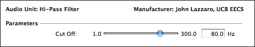
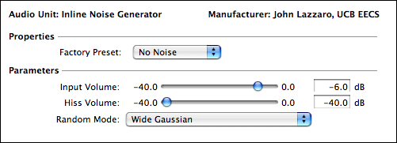
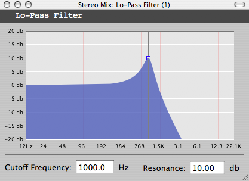
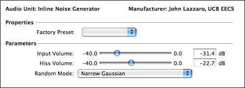

| mp4-sa-> the mp4-sa book-> special topics->audiounits |
Sections
|
Naming ConventionsParameter Sliders Parameter Text Menus Factory Presets AU Type AU SubtypeAU Manu AU Filename AU Bundle Manu AU Custom Views Standard Namescpuload |
IntroductionPlug-ins are small programs that can be run within larger host applications. In the audio world, host programs are often digital audio workstations, and plug-ins often act as in-line effects (doing tasks like equalization) or as virtual musical instruments (accepting MIDI input and generating audio output, in the way a hardware synthesizer does). By supporting plug-ins, a host developer lets outside developers write programs that run inside the host. In this chapter, we describe how to write audio plug-ins in SAOL. At this time, sfront supports a single plug-in standard -- the AudioUnit standard on Mac OS X. This format is supported by many OS X applications, including GarageBand, Logic, Ableton Live, Digital Performer, and Final Cut Pro. SAOL plug-ins are known to work under Lion (10.7) and also under Tiger (10.4). Compatibility reports for Leopard and Snow Leopard would be appreciated. Plug-in support in sfront is a work in progress, and in this chapter we note the current limitations of writing plug-ins in SAOL. Most of these limits are not intrinsic to using SAOL for plug-ins, but rather reflect the current "gaps" in sfront support. We anticipate that most of these gaps will be filled as sfront AudioUnit support matures. |
|
AudioUnits DemystifiedNewcomers to plug-ins are often surprised at how much extra programming effort a plug-in involves, compared to a stand-alone command-line program. The difference has little to do with the the audio signal-processing code for the program. Below, we list the major reasons why AudioUnit programming is complicated, and why writing a plug-in in SAOL reduces the complexity. |
|
DiscoveryA host program needs to discover the plug-ins that are installed on a computer, in order to support the user interfaces that let users select plug-ins to add to a project. The AudioUnit discovery process requires that users install AudioUnits in special directories on the disk file system (listed on the right panel). Host programs examine these directories to build the user-interface menus that display plug-ins to the user. AudioUnit plug-ins appear in the Finder as individual files, but are actually a special type of directory tree called a bundle. The right panel shows a typical directory structure for an AudioUnit. A special file, called a resource file (.rsrc), codes discovery information about an AudioUnit, including the data the host uses to build its user-interface menus for plug-in selection. When building an AudioUnit from a SAOL file, sfront creates the resource file automatically. The example Makefiles shipped with the sfront distribution create the correct bundle directory structure, and place the resource file in the correct place in the bundle. To build an example AudioUnit, type make install. This command builds the AudioUnit, copies it into a discovery directory, and launches an AU host to begin testing. |
Discovery Directories
All users: /Library/Audio/Plug-Ins/Components/
A specific user: ~/Library/Audio/Plug-Ins/Components/
AudioUnit Bundle StructureFor AudioUnit hiss: % ls hiss.component/ % cd hiss.component % ls Contents/ % cd Contents % ls Info.Plist MacOS/ PkgInfo Resources/ % cd MacOS % ls hiss* % cd ../Resources % ls hiss.rsrc |
Dynamic LoadingThe C code of an AudioUnit does not include a main() function. As a consequence, an AudioUnit cannot execute as a stand-alone program. Instead of a main() function, an AudioUnit defines an entry function that implements a standardized interface between a host and the plug-in (called a Component interface). The name of a plug-in's entry function is encoded in its resource file, along with the name of plug-in binary file. When the user chooses to add a plug-in to a project in a host, the host dynamically maps the plug-in binary into the host's address space, and then calls the plug-in's entry function. The host uses a standard interface to communicate with the plug-in through the entry function. The information in the resource file enables this bootstrap process. The sa.c file created by sfront defines an AudioUnit entry function. The entry function bridges the gap between the AudioUnit standard and the MPEG 4 Structured Audio standard. The resource file that sfront creates embeds the names of the entry function and the AudioUnit binary file, and the Makefiles shipped in the sfront AudioUnit example projects place the binary file in the correct location in the bundle directory tree. |
|
Multiple InstantiationA host may be running several copies (instances) of an AudioUnit plug-in at the same time. Each instance acts as an independent entity. However, only one binary image of the AudioUnit plug-in is mapped into the host's address space. You may be wondering, how do the AudioUnit instances maintain independent state while sharing a common binary? To solve this problem, AudioUnits use an "instance factory" model. An AudioUnit entry function accepts host requests to create independent instances of the plug-in. The entry function also accepts requests to destroy a plug-in instance when it is no longer needed. As part of the creation process, an entry function dynamically allocates memory to hold an instance's state. The entry function reclaims the state memory when the instance is destroyed. A SAOL program represents a single instance of the plug-in. The sa.c file created by sfront uses this SAOL program as a template to create independent instance copies on demand. Sfront detects SAOL global variables that are accessed in a read-only fashion, and shares those variables among all instances. This optimization is particularly helpful for plug-ins that use large sample wavetables. |
|
User InterfaceIn addition to processing audio, an AudioUnit plug-in may present a control interface to the user inside the host. The host provides a configuration button for each plug-in instance; the user the button to bring up the control interface window. For example, the interface of a high-pass plug-in may include an on-screen slider to vary the filter cut-off frequency. A control screen for this plug-in is shown below.  An AudioUnit defines its user interface by declaring floating-point parameters during initialization. For each parameter (for example, the cut-off frequency parameter of a high-pass filter plug-in), the plug-in tells the host the parameter name ("Cut-Off"), its units ("Hz"), its preferred user interface ("a slider with a logarithmic taper"), and the parameter's minimum ("1 Hz"), maximum ("300 Hz") and default values ("80 Hz"). A host creates a simple (a.k.a generic) user interface for a plug-in, by drawing a user-interface control on the screen for each parameter. The host sends an updated parameter value to the plug-in whenever the user moves a slider. Parameters are also the mechanism AudioUnits user for persistent state -- when a host saves a user project, it saves the current parameter values for each plug-in. SAOL programmers specify the parameters for a plug-in's user interface by declaring ksig variables in the global block that follow a special naming convention. Ancillary variable declarations define the user-interface appearance of each parameter. The naming conventions for these SAOL variables are defined on the right panel. On each k-cycle, the values of SAOL global ksig variables associated with AudioUnit user-interface parameters are updated to reflect user activity in the host. By importing these global variables, SAOL instrs can change their behavior based on real-time user input. The variable updates follow the same semantics as SASL updates of global variables. If SAOL program code updates a variable that is associated with a AudioUnit user-interface parameter, the new data appears in the AudioUnit user-interface screen. The naming convention supports display user-interface elements, so that the user-interface can display parameter values (without offering a way for the user to change the parameter values). |
Parameter Naming ConventionsAudioUnit parameters are SAOL ksig scalar variables defined in the global block. Variable must begin with aup_, followed by the parameter name. In the user interface, underscores in the name are presented as spaces, and case is preserved. The name must not use the strings _factory, _idx, _unit, _slider, _menu, _checkbox, and _pinfo. SAOL programs read the aup_name variable to learn the current value of a parameter.
The user-interface control for a parameter aup_name may be
specified by declaring a ksig scalar variable with a particular
naming convention. This variable exists to code information in its
name -- the run-time value of the variable has no special
significance to the sfront engine. The examples below define the
naming convention:
In a similar fashion, the unit label that appears next to a slider
may be specified with variables of the form:
The range and default value for a parameter aup_name is defined by a SAOL table aup_name_pinfo. The three elements of this table specify the minimum, default, and maximum values of the parameter.
The parameter variable in the example control window is defined as:
|
Factory PresetsAn AudioUnit plug-in developer may define factory presets. Factory presets are sets of parameter value that produce a useful behavior. For example, a high-pass filter plug-in may define a factory preset "Vocal Rumble", whose cut-off value is useful for filtering out the rumble picked up by microphones stands. SAOL programs may define a factory preset by declaring a table in the global block that follows a specialized naming convention. The naming convention is shown on the right panel. By enabling a special debug mode, SAOL developers can instruct a plug-in instance running in a host to print out a factory preset table of the current plug-in state to a log file. We describe this debug mode later in this chapter. |
Factory Preset Naming ConventionsAudioUnit factory presets are defined as tables in the global block. Preset tables must begin with the prefix aup_factory_, followed by the preset name. In the user interface, underscores are presented as spaces, and case is preserved. A preset table has a length equal to the number of AudioUnit parameters. Each table entry corresponds to a parameter, following the order of parameter declaration in the global block. A parameter's value for a factory preset is the computed value of its table entry in the factory preset table.
Example factory preset declarations:
global {
// Parameters shown in AudioUnit user interface
ksig aup_Attack;
ksig aup_Release;
// Factory preset tables Attack Release
table aup_factory_Quick(data, 2, 0.005, 0.025);
table aup_factory_Normal(data, 2, 0.05, 0.075);
table aup_factory_Slow(data, 2, 0.200, 0.200);
}
|
SAOL Plug-insThe AudioUnit plug-in standard is deep and wide. At present, plug-ins written in SAOL support a subset of the full AudioUnit specification. Below, we describe the current status of SAOL plug-ins. |
|
Plug-In TypesThe AudioUnit standard defines a family of AudioUnit types. The three most popular types are currently supported by SAOL: MusicDevice, Effect, and MusicEffect. The right panel shows the sfront command-line options for each type. MusicDevice plug-ins are software synthesizers: they accept MIDI input (including note events) and generate audio output. Effect plug-ins are audio signal processors: they accept audio input and produce audio output. MusicEffects are similar Effects, but also accept a MIDI input stream. MusicEffects are useful for creating software synthesizers that require audio input, such as envelope followers and vocoders. The resource (.rsrc) file encodes an AudioUnit's identity using three fields: the Type, Sub-Type, and Manufacturer fields. Each field holds a 4-character constant. Sfront automatically encodes the correct Type constant in the resource file (aumu for MusicDevice, aufx for Effect, aumf for MusicEffect). The Manufacturer and Sub-Type fields form a unique identifier of a plug-in of a particular type. The Manufacturer field identifies the author of the plug-in, and the Sub-Type field identifies the particular plug-in product created by the author. The right panel shows sfront command-line options to set the Manufacturer and Sub-type fields, along with related options to set the plug-in bundle name (as seen in the Finder), and to code descriptive information about the plug-in that is shown in the user interface of an AudioUnit host. AudioUnit Bundle IDAudioUnits are a type of bundle. Bundles include a file Contents/Info.Plist that describes the bundle. The CFBundleIdentifier property in this file acts as a bundle identification string. Sfront automatically creates the CFBundleIdentifier string, and places it in the Info.Plist file. This string begins with a sub-string defining the manufacturer of the AudioUnit, using an inverted version of a DNS name associated with the manufacturer. For example, we use edu.berkeley.eecs for the example plug-ins that ship with sfront. The right panel shows the command-line options for setting the manufacturer sub-string for use with CFBundleIdentifier. |
Type SpecificationA MusicDevice AudioUnit (type aumu) is specified by the sfront command line options: -aout audiounit -cin aucontrolm An Effect AudioUnit (type aufx) is specified by the sfront command line options: -aout audiounit -ain audiounit -cin aucontrol A MusicEffect AudioUnit (type aumf) is specified by the sfront command line options: -aout audiounit -ain audiounit -cin aucontrolm In each case, -aout audiounit_debug may be substituted for -aout audiounit to use a debugging version of the audiounit drivers. All other combinations of (-ain, -aout, -cin) that include an AudioUnit driver will result in an sfront compile-time error. Sub-Type and Manufacturer OptionsSfront command-line options set the AudioUnit subtype and manufacturer fields. Each option flag must be followed by a four-character literal to define the field. Examples below: -au_component_subtype Hiss -au_component_manu ucBe The name for the AudioUnit bundle (as it appears in the Finder) may also be specified by an sfront command-line option. Spaces should not appear in this name. An example below: -au_filesystem_name hiss Finally, command-line options may be used to set the AudioUnit name and manufacturer, as it is presented in the user interface. Examples below: -au_ui_name "Inline Noise Generator" -au_ui_manu "John Lazzaro, UCB EECS" Bundle Identifier OptionsSfront command-line options determine the bundle identifier string that appears in the Info.Plist file. Example below: -au_manu_url edu.berkeley.eecs -au_filesystem_name hiss creates the CFBundleIdentifier string: edu.berkeley.eecs.audiounit.hiss |
Sample RatesIn most cases, users configure an audio application to run at a particular audio sample rate. Users expect plug-ins to run at this sample rate. However, SAOL programs typically set a constant audio sample rate in the global block, using the srate parameter. SAOL plug-ins handle this situation in the following way. SAOL programs are free to set the srate parameter. and the sa.c sends a request to the host to use this sample rate during initialization. However, the host may override the request, and force the plug-in to use a different sample rate. In all cases, the SAOL standard name s_rate codes the actual audio sample rate. SAOL programs should use s_rate in all expressions, rather than the constant value for the parameter srate set in the global block. The SAOL language standard requires that the krate of an orchestra evenly divide the srate. If a plug-in host changes the audio sample rate of a SAOL program, the krate may also change slightly, so that it still evenly divides the srate. In all cases, the SAOL standard name k_rate will code the actual control rate. SAOL programs should use k_rate in all expressions, rather than hard-code the constant value for the parameter krate set in the global block. |
K-rate CaveatsIn the current sfront implementation, there are a few places where k-rates that change during run-time (due to an AudioUnit host changing the audio sampling rate) are not handled gracefully. These errata (and work-arounds) are listed below. (1) fft()/ifft()If len is not specified in the core opcodes, len defaults to the smallest power of two that is greater than s_rate/k_rate. At present, this computation is done at sfront compile-time, and thus will not reflect krate changes during run-time. As a work-around, specify len (or other parameters like size) explicitly, using the standard names s_rate and k_rate to compute the desired length. (2) SASL and MIDI file playbackIf your AudioUnit specifies events in a SASL or MIDI file for playback, the temporal sequencing of these events will be hard-coded in the sa.c file, using the compile-time k_rate as a time base. If the k-rate changes during run-time, playback will occur at the wrong tempo. The easiest workaround is to set a krate that evenly divides the popular audio sampling rates (96000, 88200, 48000, and 44100 Hz). The greatest common divisor is 300 Hz. |
Audio BusesAudioUnits support a versatile audio bus model. A plug-in may have an arbitrary number of input and output audio buses, and each bus may have an arbitrary number of channels. The SAOL audio bus model, at present, is more restrictive, as we describe below. However, we intend to support a more versatile bus model in future sfront releases. During initialization, a SAOL plug-in informs the AU host that the plug-in can deliver mono or stereo audio output on a single bus. An Effect or MusicEffect plug-in also informs the host that it can receive input on a single mono or stereo bus. The host is free to choose a mono or a stereo bus for both input and output. However, the plug-in's SAOL code is not informed of the bus sizes selected by the host. Instead, the SAOL code is written to support a static output_bus width and (for Effect and MusicEffect plug-ins) a static input_bus width. The global parameters outchannels and inchannels signal this choice (legal values are "1" and "2"). If an AU host selects a mono input bus for a SAOL plug-in that uses a stereo bus, the sa.c replicates the mono signal on the left and right channels of the SAOL input_bus. Complementary conversions are performed for the stereo-to-mono input case, and for channel-width mismatches for audio output. Note that the "single-bus" restriction means that at present, SAOL does not support plug-ins that require a side-chain input bus. |
|
User Interface ViewsThe AudioUnit specification lets a plug-in replace the generic user-interface controls (described earlier in the chapter) with a custom user-interface that the plug-in draws for itself. Most commercial plug-ins ship with a custom interface. SAOL plug-ins are capable of using a custom user-interface view, as we describe in the lpf example later in this chapter. However, at present, sfront does not create a custom user-interface view from the SAOL program structure (we intend to do so in a later release). At present, programmers write the user-interface view for a SAOL plug-in in Objective-C, using the Cocoa framework. |
|
Unsupported FeaturesIn addition to the limitations described above, many other AudioUnit specification features are not supported by SAOL plug-ins at present. For example, at present there is no way for a SAOL plug-in to sense the current tempo of an AU host sequencer. Thus, delay plug-ins that synchronize to tempo are not possible to write in SAOL. As a second example, the AudioUnit specification provides several mechanisms to ensure that plug-ins with long "decay times" (such as reverbs) clear their internal state in response to sequencer transport controls. At present, these decay-time features are not supported by SAOL plug-ins. We anticipate that these two unsupported features, and many others of a similar nature, will be supported in SAOL plug-ins in the future. In the sections that follow, we show examples of SAOL plug-ins. The examples are included in the sfront distribution examples directory, and are intended to serve as starting points for your own projects. The examples are known to work on several AudioUnit hosts: GarageBand, Ableton Live, AU Lab (a host distributed with Apple's Developer Tools) and the command-line validation host auval. |
|
sin: A Softsynth ExampleThe right panel shows the SAOL code for sin, a simple sine-wave virtual instrument that ships with the sfront distribution, in the directory sfront/examples/rtime/au/sin. Typing make install in this directory builds the AudioUnit MusicDevice component sin.component. The sin plug-in acts as as MIDI-controlled polyphonic music synthesizer. It should appear in the AU-host menu that lets the user choose MIDI instruments. The AudioUnit responds to MIDI note commands on any MIDI channel, and generates audio output in response. Global BlockThe global block begins by setting the default srate and krate values. However, all references to these values in sin are made via the s_rate and k_rate standard names. This practice ensures that sin uses the actual k-rate and s-rate of the plug-in (recall that an AudioUnit host may change the audio sampling rate of a plug-in instance, and this change in the s-rate may also force a change in the k-rate). The global block also sets outchannels to configure the output_bus to be mono. If an AudioUnit host inserts sin into a stereo bus, the output_bus value will be copied by the sa.c driver code to both AudioUnit stereo channels. The rest of the global block defines three AudioUnit parameters (Attack and Release, to shape the envelope of the note waveforms, and Notes On, to display whether notes are currently sounding) and several factory presets with different envelope shapes (Quick, Normal, and Slow). The declarations follow the naming conventions defined earlier in this chapter (click for parameter and factory preset conventions). To keep the example simple, no send statements appear in the global block, and thus SAOL instrs launched by MIDI Note commands sum audio output to the output_bus. In practice, most MusicDevice AudioUnits written in SAOL would use send and route statements to post-process this output with effect SAOL instrs, as shown in this example in the tutorial chapter of this book. |
//
// AudioUnit MusicDevice (aumu) example
// Sine wave synth with variable attack and release
//
global {
srate 44100; // AU host may change this value
krate 1050;
outchannels 1;
// Parameters shown in AudioUnit User Interface
ksig aup_Attack;
ksig aup_Release;
ksig aup_Notes_On;
// Sets the user-interface widget for each parameter
ksig aup_Attack_slider_log;
ksig aup_Release_slider_log;
ksig aup_Notes_On_display_checkbox;
// Sets the unit to display next to the slider
ksig aup_Attack_unit_s;
ksig aup_Release_unit_s;
// Parameter info min default max
table aup_Attack_pinfo(data, 3, 0.001, 0.01, 0.25);
table aup_Release_pinfo(data, 3, 0.001, 0.05, 0.25);
table aup_Notes_On_pinfo(data, 3, 0, 0, 1);
// Factory Preset Tables Attack Release NoteOn
table aup_factory_Quick(data, 3, 0.005, 0.025, 0);
table aup_factory_Normal(data, 3, 0.05, 0.075, 0);
table aup_factory_Slow(data, 3, 0.200, 0.200, 0);
// Note: Attack appears first in the tables because
// it is declared first in the global block.
ksig note_count; // number of notes playing
}
|
The tone instrThe rest of the sin example program defines the tone MIDI instr, shown on the right panel. An instance of tone is created for each MIDI NoteOn received from the AudioUnit host. In most respects, AudioUnit MIDI instrs follow the semantics defined in the MIDI control chapter of the book. However, the sin example uses aspects of sfront initialization behavior simplify AudioUnit power-up behavior, in the manner we now describe. As shown on the right panel, the tone header specifies preset 0, indicating that a tone instance should be created for NoteOn commands on all MIDI channels whose most recent MIDI Program Change set the program number to 0. The reader may wonder, how does the AudioUnit behave if the user never sends a MIDI Program Change command to the plug-in? The answer is as follows. During compilation, sfront sorts all MIDI instrs in order of ascending preset tag number. Then, sfront initializes MIDI channel 0 to use the first instr in this sorted list, MIDI channel 1 to use the second, etc. If there are more channels that list elements, the list is traversed several times. Thus, for the sin program example, all MIDI channels execute a MIDI Program Change 0 command on power-up, and all Note commands will create a tone instance. By default, tone will remain bound to all MIDI channels for the lifetime of the AudioUnit, as the sfront run-time engine ignores MIDI Program Change commands whose preset values do not correspond to a SAOL instr. The sfront option -null-program changes this behavior, so that MIDI Program Changes to preset numbers without corresponding SAOL instrs will silence a MIDI channel. tone program codeThe tone instr imports the SAOL global variables associated with AudioUnit user-interface sliders, and uses these variables to initialize the ksig variables that generate the attack envelope phase. The initialization occurs at instance-relative time 0, inside the if (itime == 0) clause). The rest of the k-rate code detects the MIDI NoteOff (by sensing the released standard name), extend()s the lifetime of the instance to execute the release envelope, and reconfigures the envelope generation variables to create the release envelope phase. The a-rate code generates the sine waveform using a simple trigonometric algorithm, shapes the sine wave with the envelope waveform, and uses an output statement to sum the audio sample onto the output_bus. |
// instr "tone" plays the MIDI notes
instr tone (pitch, vel) preset 0 {
imports exports ksig aup_Attack; // matches globals
imports exports ksig aup_Release;
imports exports ksig aup_Notes_On;
imports exports ksig note_count;
ivar a; // osc constant
ksig attack, attack_incr, tot_incr; // attack constants
ksig release, release_mult; // rel constants
ksig incr, rel, tot; // envelope state
asig x, y, init; // osc state
asig env; // envelope state
// **********************
// computed during i-pass
// **********************
// compute oscillator constant
a = 2.0*sin(3.14159*cpsmidi(pitch)/s_rate);
// **********************
// computed during k-pass
// **********************
if (itime == 0) // compute envelope constants
{
attack = int(aup_Attack*k_rate)/k_rate;
attack_incr = (vel/256)/(attack*s_rate);
tot_incr = (vel/256)/(attack*k_rate);
release = int(aup_Release*k_rate)/k_rate;
release_mult = 1/((release + 2/k_rate)*s_rate);
note_count = note_count + 1;
aup_Notes_On = 1;
}
// update envelope k-rate state
incr = 0; // no increment during envelope sustain
if (released) // detect user releasing a note
{
if (rel)
{
note_count = note_count - 1;
aup_Notes_On = (note_count > 0) ? 1 : 0;
}
else
{
rel = 1;
extend(release);
}
}
if (rel) // update release envelope ?
{
incr = -tot*release_mult;
}
else
{
if (itime < attack) // update attack envelope ?
{
incr = attack_incr;
tot = tot + tot_incr;
}
}
// **********************
// computed during a-pass
// **********************
if (init == 0) // initialize osc state
{
x = 0.25;
init = 1;
}
x = x - a*y; // update osc state
y = y + a*x;
env = env + incr; // update envelope state
output(env*y); // mono audio out
}
|
hiss: An Effect ExampleThe right panel shows the SAOL code of hiss, a simple Effect AudioUnit that adds random noise to an audio signal. The hiss plug-in ships with the sfront distribution, in the directory sfront/examples/rtime/au/sin. The Makefile in this directory builds the AudioUnit component hiss.component as an Effect plug-in (type make install to build hiss). AudioUnit Effects are not sent MIDI data; thus, the SAOL instrs in this example do not use the MIDI preset tag, and no MIDI standard names appear in the code. However, if the Makefile were changed to use -cin aucontrolm instead of cin aucontrolm, then hiss would be built as a MusicEffect plug-in, and the SAOL code could use MIDI language constructs. Global BlockNear the top of the global block, inchannels and outchannels are set to configure a stereo-in, stereo-out plug-in. If an AU host inserts hiss into a mono mixer channel, code in the sa.c AudioUnit driver duplicates the mono input onto both channels of input_bus, and converts the stereo output_bus to a mono signal on the way back to the AU host. The send statement in the global block sets the signal flow graph for the plug-in: the input_bus is routed to an instance of the SAOL instr addnoise, and (per default SAOL semantics) the output of addnoise is routed to the SAOL output_bus. The rest of the global block defines three AudioUnit parameters (Input Volume, Hiss Volume, and Random Mode), and three factory presets (No Noise, No Signal, and Balanced), using the naming conventions defined earlier in this chapter (click for parameter and factory preset conventions). The right panel shows the control window as it appears in an AU host. Note that the Random Mode parameter (which selects the algorithm used to generate the added noise) appears as a menu, as requested by the aup_Random_Mode_menu variable declaration. Each menu item is associated with an integer variable; the minimum and maximum entries of the pinfo table set the number of menu items. The labels displayed for each menu item are coded in the global block by the presence of ivar scalar variables that use a special naming convention: aup_, followed by the menu parameter name (in this case, Random_Mode), followed by an identifier for menu index N (coded as _idxN), followed by the text to be displayed for the menu selection. The menu item variables for Random Mode on the right panel shows examples of this syntax. |
//
// AudioUnit Effect (aufx) example
// Adds a noise signal to input audio
//
global {
srate 44100; // AU host may change this value ...
krate 100; // ... which will change this value
inchannels 2; // stereo in
outchannels 2; // stereo out
// send sets internal routing for the audiounit:
// input_bus -> addnoise instr -> output_bus
send (addnoise; ; input_bus);
// Parameter shown in AudioUnit User Interface
ksig aup_Input_Volume; // "_" becomes " " in the UI
ksig aup_Hiss_Volume;
ksig aup_Random_Mode;
// Sets the user-interface widget for each parameter
ksig aup_Input_Volume_slider_linear;
ksig aup_Hiss_Volume_slider_linear;
ksig aup_Random_Mode_menu;
// Sets the unit to display next to the slider
// Units are not used for checkbox and menu widgets
ksig aup_Input_Volume_unit_dB;
ksig aup_Hiss_Volume_unit_dB;
// "Random Mode" displays a pop-up menu,
// whose text labels are coded below
ivar aup_Random_Mode_idx0_Wide_Gaussian;
ivar aup_Random_Mode_idx2_Uniform;
ivar aup_Random_Mode_idx1_Narrow_Gaussian;
// Parameter info min default max
table aup_Input_Volume_pinfo(data, 3, -40, -6, 0);
table aup_Hiss_Volume_pinfo(data, 3, -40, -6, 0);
table aup_Random_Mode_pinfo(data, 3, 0, 0, 2);
// Factory Preset Tables Input dB Hiss dB Mode
table aup_factory_No_Noise(data, 3, -6, -40, 0);
table aup_factory_No_Signal(data, 3, -40, -6, 0);
table aup_factory_Balanced(data, 3, -6, -6, 0);
// Note: Input dB appears first in factory preset tables
// because it is declared first in the global block
}
 |
The addnoise instrThe right panel shows the code for addnoise, the SAOL instr that accepts input_bus samples and produces output_bus samples. In the declaration block, addnoise imports the three AudioUnit parameters, and declares ksig state variables that track changes in the hiss and signal volume parameters. Change tracking is done at the k-rate, in the if (itime) control block. We track the state of the variables to avoid doing expensive logarithmic-to-linear conversion on every k-cycle. The rest of the code runs at the a-rate. An if-else tree selects the output statement that corresponds to the user-selected random noise generator. For each random generator option, the input waveform is accessed via the input standard name, weighted by the input-volume parameter, and then added to a weighted version of the random-number generator output. The constants in each random-generator call are tuned to produce consistent loudness across the generators, at moderate absolute volume. |
// instr addnoise adds a noise signal to input[] audio
instr addnoise () {
imports exports ksig aup_Input_Volume; // matches globals
imports exports ksig aup_Hiss_Volume;
imports exports ksig aup_Random_Mode;
ksig hiss_db_last, hiss_linear; // noise state
ksig input_db_last, input_linear;
// **********************
// computed during k-pass
// **********************
// ampdb() is expensive -> only do when parameters change
if (itime)
{
if (hiss_db_last != aup_Hiss_Volume)
{
hiss_db_last = aup_Hiss_Volume;
hiss_linear = ampdb(90 + hiss_db_last);
}
if (input_db_last != aup_Input_Volume)
{
input_db_last = aup_Input_Volume;
input_linear = ampdb(90 + input_db_last);
}
}
else
{
hiss_db_last = aup_Hiss_Volume;
hiss_linear = ampdb(90 + hiss_db_last);
input_db_last = aup_Input_Volume;
input_linear = ampdb(90 + input_db_last);
}
// **********************
// computed during a-pass
// **********************
// Random Mode selects different noise functions
if (aup_Random_Mode == 2)
{
output(input_linear*input +
hiss_linear*agaussrand(0, 0.1));
}
else
{
if (aup_Random_Mode == 1)
{
output(input_linear*input +
hiss_linear*agaussrand(0, 0.05));
}
else
{
output(input_linear*input +
hiss_linear*arand(0.1));
}
}
}
|
lpf: A Custom View ExampleSAOL plug-ins are not limited to generic user-interface views. In this section, we describe lpf, an AudioUnit whose audio signal processing code is written in SAOL, and whose custom user-interface view code is written in Objective C. This plug-in ships with the sfront distribution, in the directory sfront/examples/rtime/au/lpf. This development approach works because user-interface views are not part of the executable code of an AudioUnit. Instead, the user-interface view is a separate executable program, contained in a bundle that (usually) appears in a sub-directory of the AudioUnit bundle. The lpf example is based on the FilterDemo example that appears in the Apple AudioUnit SDK. We re-coded the FilterDemo C++ implementation in SAOL. This program appears in the file lpf/lpf.saol. We borrowed the FilterDemo Cocoa user-interface view to serve as the user-interface view for lpf. This code lives in lpf/CocoaFilterView. We changed the original view code to ensure unique names for the Cocoa classes, and to add some user-interface code that Apple's implementation placed in the C++ AudioUnit. To build the lpf example, type Make install in the lpf directory. The Makefile first builds the user-interface view in the CocoaFilterView directory. Then the Makefile builds the AudioUnit from the SAOL code, using sfront command-line options that let an AudioUnit instance discover and launch the custom view. These options are described on the right panel. Finally, the AudioUnit is installed, and GarageBand is launched to test the AudioUnit. The right panel also shows a screen image of the lpf custom view. The user can change the filter parameters by dragging the cross-hairs on the response curve, or by typing numbers into the boxes at the bottom of the view. As a practical matter, learning to write Cocoa user-interface views has a steep learning curve (see this Apple Programming Guide for details). In a future release, we intend to add support for automatically generating user-interface views from the semantics of the SAOL program. |
View Screen for lpf View Discovery OptionsAudioUnits with custom views usually discover those views upon instantiation. The sfront command-line options below cause sfront to create the sa.c code for view discovery. -au_view_bundlename viewname -au_view_baseclass classname The viewname argument is the name of the bundle for the Cocoa View, without the .bundle suffix. Sfront assumes the view bundle will reside in the AudioUnit bundle sub-directory Contents/Resources. The classname argument is the class in the view that implements the AUCocoaUIBase protocol. In the lpf example, these options are set to be: -au_view_bundlename CocoaFilterView -au_view_baseclass UCBLopassFilter_ViewFactory |
DebuggingIf the sfront command-line option -aout audiounit_debug appears in lieu of -aout audiounit, the sa.c file generates a debugging version of AudioUnit support. In this section, we describe features of this debug mode. Note that debug mode may cause clicks in the audio output stream, and thus should not be left on for production use. In this section, we also describe AudioUnit-specific aspects of the SAOL cpuload standard name. Basic information about cpuload appears in this section of the book. Note that cpuload works correctly in both regular and debug modes. The wiretap.txt fileWhen an AudioUnit host maps the binary code for a debug-enabled SAOL plug-in into its address space, the plug-in creates an ASCII log file /tmp/wiretap.txt, and logs diagnostic messages to the file thereafter. Restarting the AU host will delete the existing wiretap.txt and create a new one. If debug mode is enabled, the sfront print statement writes its output to the wiretap.txt file. We describe the syntax of the SAOL print statement in this section of the debugging chapter of this book. Note that the wiretap.txt file may contain many messages written by the sfront audiounit driver about its own status. To simplify debugging, your SAOL-program writes to wiretap.txt should be easy to search for in a text editor. One approach is to start each printf output line with an identifying title. |
|
wiretap.txt and Factory PresetsMost of the data written to wiretap.txt by the sfront driver chronicle the messages sent between the plug-in and the host, and is generally more useful for debugging the sfront AudioUnit drivers than debugging the SAOL program. However, one of the these log messages, kAudioUnitGetPropertySelect for kAudioUnitProperty_ClassInfo, is useful for SAOL programmers who are creating the factory preset library for their plug-in, as we now describe. When an AU host saves a project file to disk (and also at other times), the host sends the kAudioUnitGetPropertySelect message for kAudioUnitProperty_ClassInfo to a plug-in instance, and the plug-in returns state to save to disk. In debug mode, the plug-in also writes a human-readable form of its state to wiretap.txt, including a SAOL table line suitable for use as a factory preset line in the global. Thus, a SAOL programmer can design factory presets using the user-interface control screen in an AU host. Once the patch is complete, the programmer can save the host project to disk, then example the wiretap.txt for the correct SAOL table line for the factory presets. An example of wiretap.txt output for this use case is shown on the right panel. |
Factory Preset exampleThe user-interface window below shows the parameter state of the hiss example plug-in, at the moment when the AU host requested state information from the plug-in.  Concurrently, the message below was written to wiretap.txt. kAudioUnitGetPropertySelect For kAudioUnitProperty_ClassInfo kAudioUnitScope_Global A preset for aumf Hiss ucBe 3 parameters for scope 0, element 0: P[0] = -31.3514 P[1] = -22.7027 P[2] = 1 Preset Name: Untitled Render Quality: Maximum (127) CPU Load: 0 table aup_factory_Untitled(data, 3, -31.3514, -22.7027, 1);The table line is suitable for use as a factory preset table in the global block of the SAOL code for hiss. |
The cpuload standard nameAs described in this section of the book, the cpuload standard name returns a values between 0.0 and 1.0, that codes the amount of computer time the SAOL program has recently used. For SAOL AudioUnit plug-ins, a cpuload of 1.0 codes for the case where the AudioUnit took 1 second of wall-clock time on a single processor to compute the samples for 1 second of audio samples. Therefore, on a single-processor system, a cpuload of 1.0 during glitch-free operation could never be achieved, as the AudioUnit host (and the operating system, concurrently-running programs, etc) would need to run for some fraction of the 1 second. SAOL programmers should keep this fact in mind when measuring performance using cputime. Finally, we note that user-interface control screen for an AudioUnit may contain a "Restrict CPU Load" percentage control, in the Properties section. If this percentage is set to a non-zero value (say, 10%), the SAOL cpuload standard name returns a value of 1.0 if the AudioUnit is using 10% of a single processor. |
|
SummaryPart V/4 completes the main text of the MPEG 4 Structured Audio Book. We conclude the text with the Appendix, that includes a keyword index. Appendix A: Aspects of MP4-SA Not Covered In this Book |
|
| mp4-sa-> the mp4-sa book-> special topics->audiounits |